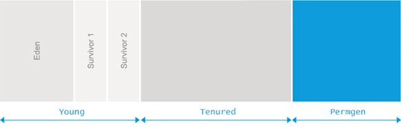

Table of Contents
12. Garbage Collection
Termenul de Garbage Collection (gc) se referă la algoritmii de eliberare implicită a memoriei dinamice sau, altfel spus, de colectare a zonelor de memorie devenite inaccesibile.
Zonele care pot să fie eliberate (garbage) sunt zone de memorie la care nu se mai poate ajunge prin intermediul unui pointer sau eventual a unei succesiuni de pointeri accesibili. Despre aceste zone se spune că sunt inaccesibile spre deosebire de zonele care sunt accesibile şi despre care se spune că sunt în viaţă.
Iniţial aceste tehnici au apărut în legătură cu limbajele de tip Lisp pentru care alocarea memoriei se face implicit. În prezent se încearcă utilizarea acestor tehnici și pentru limbajele care utilizează alocarea explicită a memoriei dinamice (C, C++). Limbaje mai noi, precum Java, au fost proiectate pentru a putea să utilizeze această tehnică.
Principii de funcționare
GC se execută, de regulă, când nu mai este memorie liberă disponibilă. Trebuie să rezolve două probleme: să identifice zonele nefolosite într-un mod conservativ și să elibereze zonele identificate.
Identificarea zonelor de memorie în viață se face pornind de la variabilele accesibile (mulțime rădăcină) atunci când se execută colectarea memoriei. Mulțimea rădăcină este formată din variabilele globale, variabilele locale din stiva curentă și registre. Pornind de la această mulțime și parcurgând obiectele accesibile prin intermediul unor pointeri se pot identifica obiectele accesibile. Tot ce nu este accesibil în acest fel reprezintă zona inaccesibilă (garbage).
Pentru a identifica aceste zone, trebuie să existe o strategie pentru a răspunde la două întrebări:
- dându-se un obiect, acesta conține pointeri?
- dându-se un pointer, unde este începutul și sfârșitul obiectului spre care indică pointerul?
Algoritmi de Garbage Collection
Există mai multe tipuri de astfel de algoritmi:
- secvențiali
- un singur thread
- paraleli
- mai multe thread-uri; posibilitatea de a rula pe mai multe core-uri simultan
- incrementali
- în paralel cu execuția programului
- trebuie să limiteze timpul petrecut într-un pas de GC
- cu compactare/copiere
- reduc fragmentarea memoriei
- cresc gradul de localitate a datelor
- alocare rapidă (incrementare de pointeri)
Mai multe detalii despre diversele tipuri de algoritmi în cursul de Garbage Collection.
Mark & Sweep
Algoritmii din această clasă presupun parcurgerea tuturor lanțurilor posibile de pointeri accesibili și marcarea zonelor de memorie indicate de acestea (mark). Este ca și cum s-ar turna vopsea prin pointeri, iar zonele de memorie utilizate (accesibile) devin colorate.
După ce se realizează această operație, se parcurge întreaga zonă heap și se realizează înlănțuirea zonelor de memorie nemarcate care vor forma spațiul disponibil (sweep).
pseudocod
new(A) { if (freeList este goala) { mark&sweep() if (freeList este goala) return (“out of memory”) } pointer = allocate(A) return pointer } mark&sweep() { for p in root mark(p) sweep() } | mark(Obiect) { if (marc(Obiect) == nemarcat) { marcheaza Obiect for d in descendentii (Obiect) mark(d) } } sweep() { p = bazaHeap while (p < topHeap) { if (marc(p) == nemarcat) free(p) else { sterge marcaj p p = p + size(obiect p) } } } |
Probleme algoritmi
Dacă obiectele alocate sunt de dimensiuni foarte diferite și alocarea se face într-o secvență nefavorabilă, se poate ajunge în situația ca deși spațiul total disponibil este suficient pentru o cerere de alocare, aceasta să nu poată fi satisfăcută din cauza fragmentării memoriei dinamice.
Deoarece operația sweep presupune parcurgerea întregii zone heap, durata execuției algoritmului depinde de dimensiunea zonei de memorie dinamice care poate să fie mult mai mare decât partea utilă. Acest aspect poate limita semnificativ performanțele algoritmilor de acest tip.
Pentru că obiectele alocate dinamic nu se mută, obiectele create la începutul execuției programului ajung să fie vecine cu obiecte create mult mai târziu. În acest mod, localitatea referințelor este distrusă și apar probleme de performanță.
Variațiuni algoritmi
Fragmentarea se poate rezolva:
- mai multe liste de spațiu liber, ordonate după dimensiuni; alocarea se va face după principiul best fit
- compactarea zonelor disponibile vecine
- se alocă pagini suficient de mari pentru a ține orice obiect (dezavantaj: se irosește multă memorie)
Compactarea se poate rezolva:
- prin “alunecarea” zonelor în viață peste zonele inaccesibile (rezolvă fragmentarea și localitatea, dar mărește timpul de execuție)
- variante:
- arbitrar - nu există nicio garanție a ordinii obiectelor
- alunecare - se face alunecarea pentru a păstra ordinea inițială de alocare
- liniarizare - obiectele sunt mutate conform modului în care se referă unul la altul
Algoritmul Cheney (two fingers)
Este o variantă de algoritm din clasa mark&sweep ce se poate utiliza dacă toate obiectele au aceeași dimensiune.
Algoritmul are doi pași:
- primul pas face compactarea
- al doilea pas face actualizarea pointerilor
Se folosesc doi pointeri:
- free - parcurge heap-ul de la limita de pornire căutând poziții libere
- live - parcurge heap-ul de la capăt spre început căutând obiecte în viață
Când free găsește o poziție liberă și live a găsit și el un obiect în viață, se face deplasarea obiectului. După ce se face mutarea, este memorată în vechea locație o referință la noua poziție.
În pasul al doilea se parcurc obiectele live, iar dacă ele indică spre zona liberă se face corecția corespunzătoare.
Avantaj: simplu, nu necesită spațiu suplimentar
Dezavantaj: ordine arbitrară, distruge localitatea datelor, o singură dimensiune de obiecte (se pot utiliza mai multe zone de heap pentru dimensiuni diferite)

Reference Counting
Algoritmii de tip reference counting păstrează contoare de utilizare pentru fiecare obiect.
De fiecare dată când un obiect este referit de un pointer, contorul este incrementat. De fiecare dată când un pointer este distrus, contorul obiectului spre care acesta indică este decrementat. Dacă un contor a ajuns la zero înseamnă că obiectul respectiv nu mai este accesibil și poate fi trecut imediat în lista spațiului disponibil sau se poate face o fază de măturare în care se caută obiecte cu contor zero.
Probleme:
- structurile ciclice nu ajung la zero
- menținerea contoarelor mărește timpul de execuție
Se poate combina cu execuția periodică a unui algoritm mark&sweep prin limitarea valorii contoarelor. Dacă se ajunge la limita maximă, atunci contorul nu mai este nici incrementat, nici decrementat, limitând astfel numărul de operații suplimentare pentru obiectele des referite. Prin execuția ulterioara a algoritmului mark&sweep se va parcurge toată memoria și se vor identifica atât structurile ciclice cât și obiectele cu contor blocat.
Copy Collection
În algoritmii de acest tip, memoria dinamică este împărțită în două zone. Se face alocarea de memorie într-o singură zonă (from-space) până când aceasta se umple. Execuția algoritmului începe în acest moment și copiază toate zonele de memorie accesibile din prima zonă, în a doua zona (to-space), care nu va mai conține și garbage-ul. În continuare cele două zone își schimbă rolurile.
Algoritmul Cheney pentru Copy Collection
Folosește doi pointeri (scan și next) care indică la început spre zona to-space.
Fiecare obiect accesibil poate să fie referit de către mai mulți pointeri din obiecte diferite - trebuie actualizați pointerii; se memoriează noua adresă (din to-space) la vechea adresă (în from-space). Această adresă se numește forwarding pointer.
Algoritmul folosește o funcție forward care întoarce tot timpul valoarea din to-space pentru un pointer. Acesta are două faze:
- în prima fază, obiectele accesibile direct din root sunt mutate în zona to-space
- în copiile vechi ale obiectelor se memorează adresele din zona to-space
- obiectele mutate în zona to-space pot să conțină pointeri către alte obiecte din zona from-space
- în a doua fază sunt parcurse obiectele care sunt conținute între adresele indicate de către pointerii scan și next și se tratează pointerii conținuți în aceste obiecte
- se vor copia noi obiecte în to-space
- se vor actualiza pointerii care indică spre obiecte conținute deja în to-space
pseudocod
### MAIN: scan = next = începutul zonei to-space for each registru r din root r = forward(r) while scan < next { for fiecare camp fi al obiectului *scan scan.fi = forward(scan.fi) scan = scan + dim(*scan) } | forward(p) { if p indică spre from-space if p.f1 indica spre to-space return p.f1 else { *next = *p // copiere de obiect p.f1 = next next = next + dim(*p) return p.f1 } else return p } |
Probleme:
- formularea originală face o trecere BFS - distruge localitatea datelor
- se poate face o trecere DFS, dar avem nevoie din nou de stivă (spațiu limitat)
- se poate copia doar obiectul + descendenții imediați
Non-Copying Implicit Collection (Baker)
În loc să se facă o mutare fizică a obiectelor dintr-o zonă în alta, se mută pointerii la obiecte între două liste.
Fiecare obiect are trei câmpuri suplimentare invizibile pentru programul care se execută. Două dintre ele sunt utilizate pentru ca obiectul să fie legat într-o listă dublu înlănțuită. Al treilea câmp indică lista la care este conectat obiectul. Sunt folosite, astfel, trei liste: o listă a spațiului disponibil, o listă from și o listă to.
Aloacarea de memorie se face mutând elemente din lista spațiului disponibil în lista from. Algoritmul se declanșează când se epuizează prima listă, cea a spațiului liber disponibil.
Colectarea memoriei se face mutând obiectele în viață din lista from în lista to. Când toate obiectele accesibile au fost mutate, lista from conține numai pointeri spre obiecte care nu mai sunt în viață și devine o listă a spațiului liber disponibil. Execuția copierii pointerilor se face într-o manieră similară cu cea a algoritmului Cheney.
Principalul avantaj este viteza, deoarece nu se fac copieri, iar valorile pointerilor vizibili nu se schimbă, ceea ce simplifică rolul compilatorului.
Algoritmi incrementali
Întreruperile necesare GC sunt inacceptabile într-un sistem de timp real - se face colectarea incremental.
Se pune problema consistenței datelor deoarece rulează două procese simultan:
- mutator (programul)
- colector (GC)
M&S - cititori-scriitor, doar mutatorul modifică pointerii CC - mai mulți scriitori
Marcajul tricolor
Marcajul tricolor este o notație folosită pentru sincronizare. Obiectele pot să fie colorate cu o culoare din trei posibile:
- alb - marcajul la începutul ciclului de colectare
- gri - obiectul a fost identificat ca fiind în viață, dar obiectele la care se poate ajunge utilizând câmpurile obiectului respectiv nu au fost încă parcurse. La CC, gri sunt obiectele dintre scan și next
- negru - obiectul este în viață la sfârșitul ciclului de colectare
Indiferent de tipul de tipul de algoritm utilizat colectorul trebuie să respecte condiția - nici un câmp dintr-un obiect negru nu conține un pointer către un obiect alb.
Colectorul realizează traversarea grafului de obiecte în viață şi le schimbă culoarea.
Mutatorul poate să modifice obiectele care au fost deja tratate.
- nu poate să facă dintr-un obiect inaccesibil un obiect accesibil și nici să modifice câmpuri din interiorul unui astfel de obiect
- un obiect care a fost deja marcat în viață poate să devină inaccesibil
- un câmp (pointer) dintr-un obiect care a fost deja tratat poate să fie modificat
Prima situație poate să fie ignorată, considerarea unui obiect inaccesibil ca fiind în viață este conservativă și obiectul respectiv va fi identificat ca inaccesibil la următoarea trecere a algoritmului.
Probleme:
- modificarea câmpurilor în obiectele care au fost deja tratate
Coordonarea între mutator și colector presupune existenţa unui mecanism prin care:
- mutatorul să fie împiedicat să acceseze un obiect alb sau
- să fie împiedicat să scrie valoarea unui pointer către un obiect alb într-un obiect negru
În primul caz se utilizează o barieră la citire, (detectează dacă mutatorul încearcă să utilizeze un pointer la un obiect alb). Acesta poate fi vopsit în gri pentru că acum “se știe” că obiectul este accesibil, dar nu se știe cum sunt descendenții acestuia.
În al doilea caz se utilizează o barieră la scriere (înregistrează scrierile de pointeri în obiecte).
Bariere la scriere
În cazul algoritmilor care nu realizează copierea se utilizează barierele la scriere (nu se pune problema ca mutatorul să citească un pointer incorect).
Există 2 tipuri de bariere la scriere:
- snapshot-at-beginning
- se salveaza o copie a tuturor pointerilor înlocuiți la atribuiri; valorile salvate se adaugă la root
- toate obiectele accesibile la inceputul ciclului vor fi negre
- obiectele nou create în timpul unui ciclu sunt negre
- incremental update
- se detectează când pointerii sunt scriși în obiecte negre; dacă pointerul indică spre un obiect alb, se colorează în gri obiectul negru
- posibila implementare: se reparcurg obiectele negre din paginile de memorie marcate “dirty”
Algoritmii Baker cu barieră la citire
Copiere incrementală (bazat pe algoritmul Cheney):
- operație atomică: se invalidează obiectele din from-space, se copiază root-set-ul în to-space (practic, from-space-ul devine alb, iar root-set-ul devine gri); apoi se colectează incremental
- dacă mutatorul citește un pointer către from-space, obiectul respectiv este copiat în to-space (marcat gri) și pointerul actualizat
- obiectele nou alocate sunt alocate în to-space (colorate cu negru)
Bariera poate fi implementată software, compilatorul generând pentru fiecare referință la un pointer un cod corespunzător, sau hardware pentru mașini dedicate.
Utilizarea unei bariere la citire este în general destul de ineficientă deoarece presupune că pentru fiecare referire de pointer se face un test referitor la zona în care este conținut obiectul respectiv. Dacă obiectul este într-o zonă de top from se va declanșa operația de copiere a obiectului respectiv în zona to.
Se poate utiliza și un sprijin din partea compilatorului care poate să identifice accese care se referă la câmpuri din același obiect și să optimizeze pe această bază codul general.
Algoritmul este unul conservativ, obiectele noi fiind negre, deci chiar dacă mor imediat nu vor fi șterse decât la următorul ciclu de colectare.
Generational GC
Clasa generational GC încearcă să beneficieze de o propietate observată empiric a obiectelor alocate, și anume faptul că majoritatea obiectelor trăiesc foarte puțin, iar doar o mică parte trăiesc perioade mai lungi. Obiectele cu viață lungă încetinesc în mod nenecesar GC. Tehnicile algoritmului curent împart heap-ul în mai multe sub-heap-uri și separă obiectele pe sub-heap-uri în funcție de generația fiecărui obiect. Obiectele noi sunt alocate într-un subheap dedicat. Când nu mai există memorie, se scanează doar primul subheap, iar majoritatea obiectelor vor fi, probabil, dealocate. Subheapurile cu generații mai mari sunt scanate mai puțin frecvent. De vreme ce se scanează fragmente mici de heap și se recuperează proporțional mai mult spațiu, eficiența algoritmului este îmbunătățită.
Câte cicluri de colectare trebuie să fie supravieţuite de către un obiect pentru a fi mutat într-o generație mai veche ?
- dacă se păstrează un singur ciclu, se poate folosi CC și se pot copia direct în generația ‘mai bătrână’ obiectele care supraviețuiesc
- un obiect cu viața scurtă care a fost creat chiar înainte de colectare, va avansa degeaba la o generație mai mare
Algoritmul Ungar
Prima generație poate avea heap-ul împărțit în trei zone: una pentru obiectele nou create, celelalte fiind zonele from și to. Se face astfel diferența dintre obiectele foarte noi și cele mai vechi din generația curentă.
O variantă a algoritmului Ungar ține doar două zone: de memorare și de alocare. Obiectele care sunt colectate din zona de memorare se copiază într-o generație mai veche, iar cele din zona de alocare se copiază în zona de memorare.

Pointeri între generații
Pentru a rezolva problema pointerilor dintr-o generație veche către obiect dintr-o generație nouă, se pot folosi bariere la scriere similare celor utilizate în cazul algoritmilor de alocare incrementali.
Pentru orice operație de modificare a unui câmp de tip pointer trebuie să se faca o verificare pentru a stabili dacă nu cumva este vorba de un pointer de la un obiect dintr-o generație mai veche la un obiect dintr-o generație mai nouă. Pointerul respectiv va trebui să fie utilizat în mulțimea rădăcină pentru generația nouă. Abordarea este conservativă, obiectul dintr-o generație mai veche datorită căruia se păstrează un obiect dintr-o generație mai nouă poate să nu mai fie accesibil.
O altă metodă este folosirea memoriei virtuale (LISP: Symbolics). În loc să se înregistreze obiectele care conțin pointeri între generații se înregistrează paginile din memoria virtuală care conțin astfel de pointeri, granularitatea utlizată fiind la nivel de pagină. Timpul pentru parcurgerea setului înregistrat va depinde de numărul de pagini și de lungimea paginilor și nu de numărul de obiecte în care s-au scris pointeri.
JAVA
Java pornește în implementarea Garbage Collectorului de la observația empirică cunoscută ca Weak generational hypothesis. Obiectele sunt folosite, în majoritatea lor, pentru foarte puțin timp, iar restul au o durată de viață îndelungată.

Pornind de la această observație, Java împarte heapul în două regiuni (sau generații): Young(sau Nursery) și Old. Pentru obiectele noi, alocarea se face din regiunea Young. Dacă spațiul nu este suficient, un GC este executat pe această regiune. În urma lui memoria care nu mai este referită este revendicată, iar obiectele care sunt încă în viață sunt mutate în generația Old. În momentul în care spațiul din regiunea Old este epuizat, un GC este executat si spațiul ocupat de obiectele care între timp au devenit nefolosite este eliberat. Colectarea memoriei libere din regiunea Young este referită ca “minor collection”, cea din regiunea Old ca “major collection”. O colectare ce are loc în ambele regiuni e referită ca “Full collection”. Modelul prezentat este unul simplificat. Din motive de eficiență, Java împarte mai departe regiunile Young și Old în mai multe subregiuni.

Zona Permanent Generation, ce aparține regiunii Old, conține informații cum ar fi:
- metadata despre reprezentarea internă a claselor
- metodele claselor, constante și variabile statice
- informații suplimentare pentru optimizări (JIT)
Dimensiunea acestei regiuni poate fi setată prin parameterul XX:MaxPermSize.
In Java 8, informațiile din această regiune au fost mutate în Metaspace, care se află în regiunea nativă a memoriei(XX:MaxMetaspaceSize).
În continuare, pentru generația Old, vom vorbi doar despre regiunea Tenured.
Q: Un program poate primi excepția “Permanent Generation’s area in memory is exhausted”? Care credeți că este cauza?
Q: Ce credeți că se întâmplă dacă nu e suficient spațiu în Young pentru alocarea unui obiect nou?
Generația Young
Cea mai mare parte a obiectelor noi se “nasc” aici, iar majoritatea vor “muri” tot aici. În urma unui GC, majoritatea obiectelor sunt colectate, iar obiectele care vor supraviețui suficient de mult timp vor fi mutate în regiunea Tenured. În acest fel, numărul de obiecte “în viață” din generația Young rămâne constant mic. Asta face ca algoritmii de colectare liniari în numărul de obiecte “în viață” să fie foarte eficienți pentru această regiune.
Pe de altă parte, obiectele din generația Tenured sunt obiecte care au în general durată de viață mare, motiv pentru care multe dintre ele vor supraviețui procesului de GC. Odată cu numărul mare de obiecte, crește și spațiul ocupat din această regiune și procesul de GC durează considerabil mai mult.
Din acest motiv, este important momentul în care decidem să mutăm un obiect din generația Young în generația Tenured. Pe de o parte vrem ca numărul de obiecte din generația Young să rămână mic, lucru pe care îl putem obține prin mutarea imediată a obiectelor în generația Tenured. Pe de altă parte, vrem ca memoria ocupată de obiectele ieșite din uz să fie cât mai repede colectată. Pentru că majoritatea colectărilor se petrec în zona Young, asta înseamnă că dorim ca un obiect să rămână suficient de mult în această zonă, altfel, odată ajuns în Tenured va trebui să așteptăm colectare a acestui spațiu, care se face mai rar. Un alt lucru de care dorim să ținem cont este faptul că vom aplica algoritmi de colectare diferiți pentru cele două zone, așa că am vrea ca obiectele din fiecare zonă să respecte presupunerile zonei de care aparțin:
- obiecte cu durată de viață mică în Young.
- obiecte cu durată de viață mare în Tenured
Mașina virtuală de Java încearcă să rezolve această problemă prin împărțirea zonei Young în:
- regiunea Eden: alocările obiectelor noi se fac din această regiune.
- 2 regiuni Survivor: from și to. Aici sunt ținute obiectele vii până ating maturitatea necesară pentru a considera că vor avea o durată de viață îndelungată. În acel moment vor fi mutate în zona Tenured.
Inițial, spațiile Eden, Survivor 1 și Survivor 2 sunt libere. Unul dintre ele va fi considerat spațiul from iar celălalt spațiul to. Rolurile celor două spații se vor schimba la fiecare GC. De menționat faptul că unul dintre cele două spații (to) trebuie să fie întotdeauna liber. Alocările obiectelor se fac din zona Eden. Cu timpul, această zona va fi epuizată, moment în care un GC de tipul Mark and Copy va fi declanșat pentru obiectele din zona Eden și zona Survivor from. Majoritatea obiectelor au “murit” între timp. Obiectele rămase în viață vor fi copiate în zona Survivor to, în cazul în care nu au atins încă maturitatea, sau în zona Tenured, în caz contrar. La sfârșitul colectării, pointerii from și to sunt interschimbați.
Evaluarea maturității
Pentru obiectele aflate în viață se menține un contor al numărului de GC (minor collection) cărora le-au supraviețuit. În momentul în care acest contor depăsește o anumită valoare (denumită tenuring threshold și calculată dinamic), un obiect este considerat matur și poate fi mutat în generația Tenured.
Q: Valoarea maximă pe care poate să o ia tenuring threshold e dată de MaxTenuringThreshold care poate fi setat la pornirea mașinii virtuale. Ce valori credeți că sunt recomandate pentru acest parametru? De ce? Ce credeți că se întâmplă în cazul în care setăm această valoare la 0?
Q: Se poate întâmpla o promovare în generația Tenured, fără ca un obiect să fi atins maturitatea?
Marcarea obiectelor aflate în viață
Colectarea pentru zona Young ține cont doar de obiectele din zonele Eden și Survivor from, cele din Tenured fiind ignorate. Trebuie totuși detectate referințele către obiectele din zona Young care provin din zona Tenured. Pentru detectarea obiectelor se folosește un algoritm de tip Mark. Rădăcinile sunt considerate a fi:
- variabilele locale (stivă, regiștrii)
- parametrii funcției curente
- threadurile java active (inclusiv partea de thread local storage)
- variabilele statice
- referințele JNI
- referințele din zona tenured
Pentru detectarea referințelor din zona tenured în zona Young, se folosește tehnica numită card-marking. Generația veche este împărțită în bucăți de 512 bytes, denumite cărți. Mașina virtuală va menține un bitmap în care fiecare bit corespunde unei cărți. În momentul în care o actualizare a unei referințe are loc pentru un obiect din zona Old, bitul corespunzător cărții din care face parte obiectul este setat ca fiind dirty. În momentul unei colectări minore, obiectele din zonele marcate ca dirty din zona Old sunt scanate pentru găsirea de referințe către zona Young. Pentru actualizarea referințelor se folosesc bariere la scriere introduse de compilator.
Q: Credeți că numărul de cărți dirty este mare? De ce? Dați exemplu de situație în care poate să apară.
Notă: În momentul în care se face Marking, threadurile sunt întrerupte, pentru ca graful de referințe să nu mai fie modificat în continuare (pauză Stop the world). Oprirea threadurilor se poate face doar în anumite puncte, unde structura obiectelor și conținutul referințelor acestora sunt valide. Astfel de puncte poartă denumirea de Safe-Points și sunt introduse automat de compilator. Astfel, un GC minor nu pornește imediat ce este nevoie de el, ci în momentul în care toate threadurile au atins un SafePoint.
Q: Pot exista memory leaks în Java?
Copierea Obiectelor rămase în viață
Pentru copierea obiectelor din Eden și Survivor from în Survivor to sau Tenured, se folosește un algoritm de tipul Cheney.
Q: Care este avantajul acestor copieri? Cum arată zona Eden după colectare? Care e costul alocării unui obiect?
Multithreading
Alocarea de obiecte noi e foarte rapidă. Dar majoritatea aplicațiilor java folosesc threaduri. Pentru a evita costurile de performanță implicate de sincronizarea accesului la un pool comun, spațiul Eden este împărțit în mai multe “memory pools”, care poartă denumirea de Thread Local Allocation Buffer. Fiecare thread va aloca memorie din TLAB-ul asociat, iar când acesta este epuizat, alocarea se va face dintr-o zonă comună tuturor threadurilor, moment în care e nevoie de sincronizare.
Generația Tenured
Generația Tenured conține obiectele care au supraviețuit colectării din generația Young. Aceste obiecte au tendința de a avea o viață îndelungată. Numărul de obiecte aflate în viață la momentul unui GC este așadar mare și prin urmare și spațiul de heap necesar. Din aceasta cauza nu putem să folosim Mark and Copy și trebuie să apelăm la alte strategii de colectare.
Q: De ce nu putem folosi Mark and Copy?
Un algoritm de Mark Sweep Compact este preferat:
- Mark: asemănător cu ce se întâmplă în genererația Young
- Sweep: implementare folosind “free lists” pentru obiectele reclamate; acest pas are complexitate liniară în dimensiunea spațiului Heap disponibil.
- Compact: încearcă să rezolve problema fragmentării; Obiectele rămase în viață sunt mutate la începutul regiunii
Finalizers
Java pune la dispoziția programatorilor posibilitatea definirii, per clasă, a unei metode care să fie apelată în momentul în care un obiect din acea clasă este colectat.
Q: De ce am folosi-o? Care ar fi dezavantajele? Ce se întâmplă dacă aruncăm o excepție?
Algoritmi de GC în Java
Pentru că aplicații diferite au nevoi diferite, Java permite alegerea algoritmilor de GC pentru generația Young și generația Old. În alegerea acestora trebuie să se țină cont de:
- Performanță (throughput): se dorește minimizarea timpului total petrecut în GC
- Latență: se dorește minimizarea pauzelor în care aplicația nu răspunde
- Footprint: se dorește minimizarea memoriei folosite
Q: Dați exemple de aplicații cu necesități diferite.
Combinațiile de GC cele mai întâlnite sunt:
- Serial GC atât pentru Young, cât și pentru Old
- Parallel GC atât pentru Young, cât și pentru Old
- Parallel New pentru Young și Concurrent Mark and Sweep (CMS) pentru Old
- G1 care înglobează colectarea atât pentru Young cât și pentru Old
Serial GC
În cazul acesta se folosește MarkCopy pentru generația Young și MarkSweepCompact pentru generația Old. Acești algoritmi sunt single-threaded și de tipul stop-the-world.
Q: Când ar fi utilă această combinație?
Parallel GC
În acest caz, se folosește MarkCopy pentru generația Young și MarkSweepCompact pentru generația Old. De asemenea tipul de colectare este stop-the world. Operațiile de Mark, Copy, Compact sunt însă executate pe mai multe threaduri.
Q: Când ar fi utilă această combinație?
Q: De ce important ca procesul de GC să fie paralel? Ce se întâmplă dacă rămâne serial, iar numărul de procesoare crește? Presupuneți că inițial sistemul are un singur procesor și colectarea durează 1%, respectiv 10% din timpul total. Ce se întâmplă când trecem pe un sistem cu 32 de procesoare? Hint1: Legea lui Amdahl. Hint2
Concurrent Mark and Sweep
Numele oficial este de fapt “Mostly Concurrent Mark and Sweep Garbage Collector”. Folosește un algoritm MarkCopy paralel și stop-the world pentru generația Young și un algoritm “aproape concurent” de MarkSweep pentru generația Old. Pentru a evita pauzele lungi generate de colectarea generației Old, acest algoritm nu execută operația de compactare în această regiune și folosește “free-lists”. De asemenea, majoritatea operațiilor din fazele de Mark și Sweep sunt făcute concurent cu aplicația.
Q: Când ar fi utilă această combinație?
Garbage First GC
G1 este un GC destinat mașinilor multiprocesor și memorie de dimensiune mare. Își propune să ofere, cu probabilitate ridicată, pauze Stop the world care se încadrează în parametrii specificați, fără însă a sacrifica high performanța(throughput). G1 atinge acest scop prin câteva tehnici.
Heap-ul este partiționat în regiuni cu aceași dimensiune. iar G1 încearcă să colecteze mai întâi regiunile care au cel mai mult spațiu liber. Etapa de Marking este concurentă și în timpul ei G1 colectează statistici despre spațiul liber al fiecărei regiuni. În etapa următoare, G1 încearcă să colecteze mai întâi regiunile aproape goale (de unde și denumirea lui). În etapa următoare, G1 încearcă să copieze dintr-una sau mai multe regiuni obiecte într-o singură regiune, pentru a compacta și elibera memorie în același timp. Aceast proces este realizat în paralel, pe mai multe procesoare. Astfel, cu fiecare GC, G1 încearcă să reducă fragmentarea într-o manieră incrementală.
G1 nu oferă garanții hard pentru durata unui Stop the world, dar încearcă să atingă durata configurată cu probabilitate mare. Face acest lucru, prin actualizarea de statistici în timpul unui GC. Astfel, din procesel de GC precedente, putem estima câte regiuni pot fi colectate în fereastra de timp disponibilă.
G1 este un GC paralel, incremental și “aproape” concurent, care compactează spațiul liber. Scopul lui este să înlocuiască CMS și să ofere pauze Stop the world predictibile, fără însă a sacrifica performanța globală.
Exercițiu
Descărcați arhiva de laborator.
Instalați pachetul pentru visualvm
sudo apt-get install visualvm
Porniți programul din linia de comandă și instalați pluginul de VisualGC (Tools→Plugins→Available plugins).
visualm
Rulați aplicația din sursele laboratorului
java -Xmx512m MemLeak
Ce concluzii trageți? Analizați codul sursă.
Dacă doriți să modificați și să compilați aplicația, trebuie să instalați pachetul openjdk-7-jdk și să folosiți comanda javac
Linkuri Utile
Understanding Java Garbage Collection and what you can do about it
Understanding Java Garbage Collection and what you can do about it(presentation)
Are Your Garbage Collection Logs Speaking to You?
The JVM Write Barrier - Card Marking
Java Garbage Collection Distilled
Garbage Collection in the Java HotSpot Virtual Machine
G1: One Garbage Collector To Rule Them All
Garbage-First Garbage Collection
Java Platform, Standard Edition HotSpot Virtual Machine Garbage Collection Tuning Guide